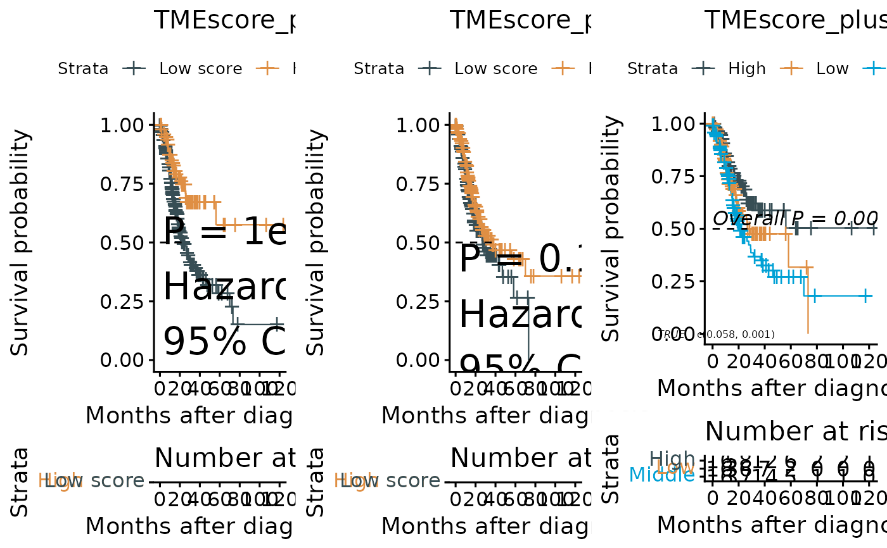

Creates Kaplan-Meier survival plots for a given signature or gene, with automatic cutoff determination. Generates three types of plots: optimal cutoff (best cutoff), tertile-based (3 groups), and median split (2 groups).
Usage
sig_surv_plot(
input_pdata,
signature,
project = "KM",
ID = "ID",
time = "time",
status = "status",
time_type = "month",
break_month = "auto",
cols = NULL,
palette = "jama",
show_col = TRUE,
mini_sig = "score",
fig.type = "png",
save_path = NULL,
index = 1
)Arguments
- input_pdata
Data frame with survival data and signature scores.
- signature
Character string. Column name of the target signature.
- project
Character string. Project name for output. Default is `"KM"`.
- ID
Character string. Column name for sample IDs. Default is `"ID"`.
- time
Character string. Column name for survival time. Default is `"time"`.
- status
Character string. Column name for survival status. Default is `"status"`.
- time_type
Character string. Time unit (`"month"` or `"day"`). Default is `"month"`.
- break_month
Numeric or `"auto"`. Time axis breaks. Default is `"auto"`.
- cols
Character vector. Optional custom colors.
- palette
Character string. Color palette if `cols` not provided. Default is `"jama"`.
- show_col
Logical indicating whether to show colors. Default is `TRUE`.
- mini_sig
Character string. Label for low score group. Default is `"score"`.
- fig.type
Character string. File format. Default is `"png"`.
- save_path
Character string or `NULL`. Directory for saving plots. If `NULL`, plots are not saved. Default is `NULL`.
- index
Integer. Index for multiple plots. Default is `1`.
Value
A list containing:
- data
Processed input data with group assignments
- plots
Combined survival plots
Examples
tcga_stad_pdata <- load_data("tcga_stad_pdata")
sig_surv_plot(
input_pdata = tcga_stad_pdata,
signature = "TMEscore_plus",
time = "time",
status = "OS_status"
)
#> ℹ Survival follow-up time range: 0.1 to 124 months
#> ℹ Best cutoff for "TMEscore_plus": 0.75
#> ✔ Best cutoff for "TMEscore_plus": 0.75
#> ℹ High TMEscore_plus: 104
#> ℹ Low TMEscore_plus: 244
#> ℹ Maximum follow-up time is 124 months; divided into 6 sections
#> Ignoring unknown labels:
#> • colour : "Strata"
#> Ignoring unknown labels:
#> • colour : "Strata"
#> Ignoring unknown labels:
#> • colour : "Strata"
#> Ignoring unknown labels:
#> • colour : "Strata"
#> Ignoring unknown labels:
#> • colour : "Strata"
#> Ignoring unknown labels:
#> • colour : "Strata"
#> $data
#> ID TMEscore_plus time status group3 group2 bestcutoff
#> 1 TCGA-3M-AB46 0.087432853 58.83 0 Middle High Low
#> 2 TCGA-B7-5818 2.030576026 11.87 0 High High High
#> 3 TCGA-B7-A5TI -0.042280224 19.83 0 Middle Low Low
#> 4 TCGA-B7-A5TJ -0.686008413 11.17 0 Low Low Low
#> 5 TCGA-B7-A5TK 2.508494086 9.60 0 High High High
#> 6 TCGA-B7-A5TN -0.627428221 9.57 0 Low Low Low
#> 7 TCGA-BR-4187 -2.212446212 4.70 1 Low Low Low
#> 8 TCGA-BR-4191 0.716909995 18.60 1 High High Low
#> 9 TCGA-BR-4201 -0.045389883 31.33 1 Middle Low Low
#> 10 TCGA-BR-4253 4.468968490 4.13 1 High High High
#> 11 TCGA-BR-4256 0.515610476 9.47 1 Middle High Low
#> 12 TCGA-BR-4257 0.687722187 9.80 1 High High Low
#> 13 TCGA-BR-4267 0.328440565 6.27 1 Middle High Low
#> 14 TCGA-BR-4279 -1.094397925 9.70 1 Low Low Low
#> 15 TCGA-BR-4280 1.882864711 6.70 1 High High High
#> 16 TCGA-BR-6452 1.395835394 35.17 0 High High High
#> 17 TCGA-BR-6453 -0.588433363 16.17 0 Low Low Low
#> 18 TCGA-BR-6455 0.862204028 14.07 1 High High High
#> 19 TCGA-BR-6456 -1.241275376 17.53 1 Low Low Low
#> 20 TCGA-BR-6457 -2.087742626 13.87 0 Low Low Low
#> 21 TCGA-BR-6458 0.261484826 19.60 1 Middle High Low
#> 22 TCGA-BR-6563 -0.940038980 22.63 0 Low Low Low
#> 23 TCGA-BR-6564 -2.712297371 26.47 1 Low Low Low
#> 24 TCGA-BR-6565 0.732728599 9.30 1 High High Low
#> 25 TCGA-BR-6566 1.102053713 33.23 0 High High High
#> 26 TCGA-BR-6705 -2.357880798 25.97 1 Low Low Low
#> 27 TCGA-BR-6707 2.375798139 16.37 0 High High High
#> 28 TCGA-BR-6709 0.695145434 12.33 1 High High Low
#> 29 TCGA-BR-6801 -1.261035997 40.77 0 Low Low Low
#> 30 TCGA-BR-6802 2.245715958 31.33 0 High High High
#> 31 TCGA-BR-6803 -2.342850196 31.63 0 Low Low Low
#> 32 TCGA-BR-6852 2.980905575 45.57 0 High High High
#> 33 TCGA-BR-7196 -0.423466487 22.20 0 Middle Low Low
#> 34 TCGA-BR-7197 -1.685372301 9.33 0 Low Low Low
#> 35 TCGA-BR-7704 1.975961261 35.73 0 High High High
#> 36 TCGA-BR-7707 2.221982916 36.33 0 High High High
#> 37 TCGA-BR-7715 -1.194995482 34.10 0 Low Low Low
#> 38 TCGA-BR-7716 1.006533326 40.33 0 High High High
#> 39 TCGA-BR-7717 -1.053898646 18.40 1 Low Low Low
#> 40 TCGA-BR-7722 -0.825772538 15.53 1 Low Low Low
#> 41 TCGA-BR-7723 0.225175470 29.13 1 Middle High Low
#> 42 TCGA-BR-7901 -0.860781934 3.50 1 Low Low Low
#> 43 TCGA-BR-7957 -2.766661113 9.20 1 Low Low Low
#> 44 TCGA-BR-7958 2.495299133 29.97 0 High High High
#> 45 TCGA-BR-7959 -1.718358408 33.67 0 Low Low Low
#> 46 TCGA-BR-8058 0.366193499 37.77 0 Middle High Low
#> 47 TCGA-BR-8059 -1.478800444 14.63 1 Low Low Low
#> 48 TCGA-BR-8060 -0.699369194 11.60 1 Low Low Low
#> 49 TCGA-BR-8077 1.405981956 0.70 0 High High High
#> 50 TCGA-BR-8080 -1.481565661 9.73 1 Low Low Low
#> 51 TCGA-BR-8081 1.748091633 32.70 0 High High High
#> 52 TCGA-BR-8284 0.212814481 8.17 1 Middle High Low
#> 53 TCGA-BR-8286 0.825033443 29.83 0 High High High
#> 54 TCGA-BR-8289 -1.817762192 2.70 1 Low Low Low
#> 55 TCGA-BR-8291 -1.605081951 20.23 1 Low Low Low
#> 56 TCGA-BR-8295 -1.038613516 2.23 1 Low Low Low
#> 57 TCGA-BR-8296 0.060309661 15.80 1 Middle High Low
#> 58 TCGA-BR-8297 -2.866226268 7.50 0 Low Low Low
#> 59 TCGA-BR-8361 1.952906728 31.53 0 High High High
#> 60 TCGA-BR-8364 -2.711971387 22.50 0 Low Low Low
#> 61 TCGA-BR-8365 -3.037650124 17.77 1 Low Low Low
#> 62 TCGA-BR-8366 1.874869722 0.97 0 High High High
#> 63 TCGA-BR-8367 -2.584888961 26.70 1 Low Low Low
#> 64 TCGA-BR-8368 1.103195787 4.37 0 High High High
#> 65 TCGA-BR-8369 -2.631194853 14.23 0 Low Low Low
#> 66 TCGA-BR-8371 -3.709632463 11.97 1 Low Low Low
#> 67 TCGA-BR-8372 2.528245581 31.70 0 High High High
#> 68 TCGA-BR-8373 -1.234190007 15.00 0 Low Low Low
#> 69 TCGA-BR-8381 1.771721868 7.47 0 High High High
#> 70 TCGA-BR-8382 1.821141663 25.40 1 High High High
#> 71 TCGA-BR-8384 -3.191978055 3.77 0 Low Low Low
#> 72 TCGA-BR-8483 -0.154650823 5.47 0 Middle Low Low
#> 73 TCGA-BR-8484 0.854955825 25.53 1 High High High
#> 74 TCGA-BR-8485 -0.077624724 9.33 0 Middle Low Low
#> 75 TCGA-BR-8486 0.219674252 20.50 0 Middle High Low
#> 76 TCGA-BR-8487 1.534006935 1.13 0 High High High
#> 77 TCGA-BR-8588 -0.527342146 12.97 0 Low Low Low
#> 78 TCGA-BR-8589 3.454605264 27.50 0 High High High
#> 79 TCGA-BR-8590 -1.508197079 9.47 1 Low Low Low
#> 80 TCGA-BR-8591 1.168230564 28.53 0 High High High
#> 81 TCGA-BR-8592 -3.463495552 6.37 1 Low Low Low
#> 82 TCGA-BR-8676 1.699565602 7.63 0 High High High
#> 83 TCGA-BR-8677 0.908595481 27.10 0 High High High
#> 84 TCGA-BR-8678 1.497235100 25.13 0 High High High
#> 85 TCGA-BR-8680 -0.174261041 32.40 0 Middle Low Low
#> 86 TCGA-BR-8682 -2.440362608 33.03 0 Low Low Low
#> 87 TCGA-BR-8683 -0.806819447 10.00 1 Low Low Low
#> 88 TCGA-BR-8686 -0.090328232 21.17 1 Middle Low Low
#> 89 TCGA-BR-8687 -1.096202202 8.33 1 Low Low Low
#> 90 TCGA-BR-8690 1.937608108 10.83 0 High High High
#> 91 TCGA-BR-A44T -1.586954310 34.60 0 Low Low Low
#> 92 TCGA-BR-A44U -0.192106854 14.07 1 Middle Low Low
#> 93 TCGA-BR-A4CS -0.309092444 1.50 1 Middle Low Low
#> 94 TCGA-BR-A4IV -3.724055686 28.97 1 Low Low Low
#> 95 TCGA-BR-A4J4 0.739081884 0.53 0 High High Low
#> 96 TCGA-BR-A4J5 -2.520247766 28.73 0 Low Low Low
#> 97 TCGA-BR-A4J6 -1.685486466 0.67 0 Low Low Low
#> 98 TCGA-BR-A4J7 -1.006198521 32.97 0 Low Low Low
#> 99 TCGA-BR-A4J8 -1.336552738 13.70 0 Low Low Low
#> 100 TCGA-BR-A4J9 -3.474727041 0.47 0 Low Low Low
#> 101 TCGA-BR-A4PF 1.632431537 1.17 0 High High High
#> 102 TCGA-BR-A4QL 0.986749644 16.37 1 High High High
#> 103 TCGA-CD-5798 -2.407578869 13.60 0 Low Low Low
#> 104 TCGA-CD-5799 -0.454845368 13.20 0 Middle Low Low
#> 105 TCGA-CD-5800 -0.555015697 13.33 0 Low Low Low
#> 106 TCGA-CD-5801 3.011833051 13.37 1 High High High
#> 107 TCGA-CD-5803 0.005660894 11.37 1 Middle Low Low
#> 108 TCGA-CD-5804 -0.643185305 12.27 0 Low Low Low
#> 109 TCGA-CD-5813 -0.914595973 12.57 1 Low Low Low
#> 110 TCGA-CD-8524 -0.426250219 12.93 0 Middle Low Low
#> 111 TCGA-CD-8525 1.251185347 12.77 0 High High High
#> 112 TCGA-CD-8526 0.033575400 12.70 0 Middle High Low
#> 113 TCGA-CD-8527 0.357379510 7.27 1 Middle High Low
#> 114 TCGA-CD-8528 -0.008223987 12.50 0 Middle Low Low
#> 115 TCGA-CD-8529 0.069564832 12.47 0 Middle High Low
#> 116 TCGA-CD-8530 -2.039501368 12.57 0 Low Low Low
#> 117 TCGA-CD-8531 -0.289943877 12.77 0 Middle Low Low
#> 118 TCGA-CD-8532 0.750420987 11.80 1 High High Low
#> 119 TCGA-CD-8533 -1.240874934 15.60 0 Low Low Low
#> 120 TCGA-CD-8534 -0.630232551 12.23 0 Low Low Low
#> 121 TCGA-CD-8535 -0.761050877 13.00 0 Low Low Low
#> 122 TCGA-CD-A486 -0.218266230 6.40 1 Middle Low Low
#> 123 TCGA-CD-A487 -1.371644282 12.47 0 Low Low Low
#> 124 TCGA-CD-A489 -2.402799238 11.47 1 Low Low Low
#> 125 TCGA-CD-A48A -0.540268266 12.60 0 Low Low Low
#> 126 TCGA-CD-A48C 0.063456811 11.77 1 Middle High Low
#> 127 TCGA-CD-A4MG -0.346838539 6.67 1 Middle Low Low
#> 128 TCGA-CD-A4MH -0.041876847 12.37 0 Middle Low Low
#> 129 TCGA-CG-4301 -0.665899128 3.07 0 Low Low Low
#> 130 TCGA-CG-4305 0.821016168 16.17 0 High High High
#> 131 TCGA-CG-4306 0.534477072 1.03 1 Middle High Low
#> 132 TCGA-CG-4436 1.408772232 8.10 0 High High High
#> 133 TCGA-CG-4437 1.073038754 8.17 0 High High High
#> 134 TCGA-CG-4438 1.559919239 54.83 0 High High High
#> 135 TCGA-CG-4440 0.363942599 4.07 1 Middle High Low
#> 136 TCGA-CG-4441 0.370144430 14.20 1 Middle High Low
#> 137 TCGA-CG-4443 -1.238473314 30.40 0 Low Low Low
#> 138 TCGA-CG-4444 0.005172810 47.70 0 Middle Low Low
#> 139 TCGA-CG-4460 0.179872598 22.30 1 Middle High Low
#> 140 TCGA-CG-4465 0.808363899 9.13 1 High High High
#> 141 TCGA-CG-4466 0.859523320 19.23 0 High High High
#> 142 TCGA-CG-4469 0.655326199 7.17 1 High High Low
#> 143 TCGA-CG-4475 -1.869678360 23.30 0 Low Low Low
#> 144 TCGA-CG-4477 1.380597116 31.40 0 High High High
#> 145 TCGA-CG-5717 -0.363308463 7.07 1 Middle Low Low
#> 146 TCGA-CG-5718 0.442567190 36.50 1 Middle High Low
#> 147 TCGA-CG-5719 -1.461114557 1.03 0 Low Low Low
#> 148 TCGA-CG-5720 0.375730975 1.00 1 Middle High Low
#> 149 TCGA-CG-5721 2.772197651 6.10 0 High High High
#> 150 TCGA-CG-5722 1.210224162 1.00 0 High High High
#> 151 TCGA-CG-5723 1.962410070 106.53 0 High High High
#> 152 TCGA-CG-5724 1.073003113 12.20 1 High High High
#> 153 TCGA-CG-5725 0.056541853 15.23 1 Middle High Low
#> 154 TCGA-CG-5726 0.248455000 29.37 1 Middle High Low
#> 155 TCGA-CG-5732 0.111338043 70.00 1 Middle High Low
#> 156 TCGA-CG-5734 1.190658860 8.10 1 High High High
#> 157 TCGA-D7-5577 2.969485438 26.07 1 High High High
#> 158 TCGA-D7-5578 0.091262524 12.83 0 Middle High Low
#> 159 TCGA-D7-6519 -0.413198045 20.83 0 Middle Low Low
#> 160 TCGA-D7-6520 -0.364434307 19.10 0 Middle Low Low
#> 161 TCGA-D7-6521 -0.683092021 18.80 0 Low Low Low
#> 162 TCGA-D7-6522 -0.204226491 18.87 0 Middle Low Low
#> 163 TCGA-D7-6524 -1.356370267 18.10 0 Low Low Low
#> 164 TCGA-D7-6525 -0.173409115 13.53 1 Middle Low Low
#> 165 TCGA-D7-6526 -0.857769285 17.43 0 Low Low Low
#> 166 TCGA-D7-6527 -0.571380508 10.40 1 Low Low Low
#> 167 TCGA-D7-6528 0.440725967 15.43 0 Middle High Low
#> 168 TCGA-D7-6815 -0.266349903 16.20 0 Middle Low Low
#> 169 TCGA-D7-6818 -1.263334887 12.53 1 Low Low Low
#> 170 TCGA-D7-6822 0.744461086 12.50 0 High High Low
#> 171 TCGA-D7-8570 1.744016426 25.07 0 High High High
#> 172 TCGA-D7-8572 -0.510664595 17.03 0 Low Low Low
#> 173 TCGA-D7-8573 1.504832020 19.77 0 High High High
#> 174 TCGA-D7-8574 -1.190597188 17.43 0 Low Low Low
#> 175 TCGA-D7-8575 -0.699514650 18.47 1 Low Low Low
#> 176 TCGA-D7-8576 -0.224446998 14.87 1 Middle Low Low
#> 177 TCGA-D7-8578 -1.789331334 21.43 0 Low Low Low
#> 178 TCGA-D7-8579 -2.719160450 21.20 0 Low Low Low
#> 179 TCGA-D7-A4YU 1.127254845 16.67 0 High High High
#> 180 TCGA-D7-A4YX 3.561581684 36.93 0 High High High
#> 181 TCGA-D7-A4Z0 -1.552073252 14.97 0 Low Low Low
#> 182 TCGA-D7-A6EV -0.094756403 11.40 0 Middle Low Low
#> 183 TCGA-D7-A6EX -1.524610463 2.87 0 Low Low Low
#> 184 TCGA-D7-A6EY 1.059731234 11.60 1 High High High
#> 185 TCGA-D7-A6EZ 3.259250049 20.60 1 High High High
#> 186 TCGA-D7-A6F0 1.206081671 22.60 0 High High High
#> 187 TCGA-D7-A6F2 0.286550678 15.87 0 Middle High Low
#> 188 TCGA-D7-A747 -2.815643464 8.50 1 Low Low Low
#> 189 TCGA-D7-A748 -0.866992560 4.40 1 Low Low Low
#> 190 TCGA-D7-A74A 1.151314930 20.23 0 High High High
#> 191 TCGA-EQ-8122 -1.777650197 8.10 1 Low Low Low
#> 192 TCGA-F1-6874 0.892236141 14.67 0 High High High
#> 193 TCGA-F1-6875 -1.316804245 73.23 1 Low Low Low
#> 194 TCGA-F1-A448 -0.647952672 21.57 0 Low Low Low
#> 195 TCGA-F1-A72C 0.491419057 11.53 0 Middle High Low
#> 196 TCGA-FP-7735 0.100162478 3.53 1 Middle High Low
#> 197 TCGA-FP-7829 -1.330410145 19.80 0 Low Low Low
#> 198 TCGA-FP-7916 1.095232142 14.27 1 High High High
#> 199 TCGA-FP-7998 1.756865102 22.60 0 High High High
#> 200 TCGA-FP-8099 0.077821345 17.30 0 Middle High Low
#> 201 TCGA-FP-8210 -1.657101288 5.10 1 Low Low Low
#> 202 TCGA-FP-8211 0.883276025 13.77 0 High High High
#> 203 TCGA-FP-8631 -0.931921750 0.57 0 Low Low Low
#> 204 TCGA-FP-A4BF 1.622596834 5.60 1 High High High
#> 205 TCGA-FP-A8CX 0.297131564 0.23 0 Middle High Low
#> 206 TCGA-FP-A9TM 0.226240573 6.30 0 Middle High Low
#> 207 TCGA-HF-7132 0.397697941 78.37 0 Middle High Low
#> 208 TCGA-HF-7133 0.767267080 63.93 0 High High High
#> 209 TCGA-HF-7134 -0.093489193 52.93 0 Middle Low Low
#> 210 TCGA-HF-A5NB 1.261556091 30.93 0 High High High
#> 211 TCGA-HJ-7597 2.082908627 26.83 1 High High High
#> 212 TCGA-HU-8238 0.438282691 1.53 0 Middle High Low
#> 213 TCGA-HU-8244 -0.170672018 24.73 0 Middle Low Low
#> 214 TCGA-HU-8249 1.724774128 29.37 0 High High High
#> 215 TCGA-HU-8602 2.792905917 22.63 0 High High High
#> 216 TCGA-HU-8604 1.688304070 23.13 0 High High High
#> 217 TCGA-HU-8608 3.457515253 21.37 0 High High High
#> 218 TCGA-HU-8610 -0.009961157 0.77 0 Middle Low Low
#> 219 TCGA-HU-A4G2 1.609150688 24.63 0 High High High
#> 220 TCGA-HU-A4G3 -0.503440096 5.67 0 Low Low Low
#> 221 TCGA-HU-A4G8 2.282114817 23.00 0 High High High
#> 222 TCGA-HU-A4G9 0.645516544 24.53 0 High High Low
#> 223 TCGA-HU-A4GC 0.356081718 3.30 0 Middle High Low
#> 224 TCGA-HU-A4GD -0.054472306 23.07 0 Middle Low Low
#> 225 TCGA-HU-A4GF 0.757226288 26.17 0 High High High
#> 226 TCGA-HU-A4GH -0.190028999 11.93 0 Middle Low Low
#> 227 TCGA-HU-A4GJ 0.056937232 21.67 0 Middle High Low
#> 228 TCGA-HU-A4GP -0.661905365 9.10 0 Low Low Low
#> 229 TCGA-HU-A4GQ 0.031003831 0.10 1 Middle Low Low
#> 230 TCGA-HU-A4GT 0.885587965 6.60 0 High High High
#> 231 TCGA-HU-A4GU 0.250163200 6.67 0 Middle High Low
#> 232 TCGA-HU-A4GX 2.394173018 20.53 0 High High High
#> 233 TCGA-HU-A4GY -0.133267847 0.27 0 Middle Low Low
#> 234 TCGA-HU-A4H0 3.435146882 2.13 0 High High High
#> 235 TCGA-HU-A4H2 0.835714916 13.13 0 High High High
#> 236 TCGA-HU-A4H3 0.962461429 29.40 0 High High High
#> 237 TCGA-HU-A4H4 2.635424865 24.17 0 High High High
#> 238 TCGA-HU-A4H5 0.423394591 24.13 0 Middle High Low
#> 239 TCGA-HU-A4H6 0.296693108 21.47 0 Middle High Low
#> 240 TCGA-HU-A4H8 0.794072638 14.27 0 High High High
#> 241 TCGA-HU-A4HB 0.580976862 15.90 1 Middle High Low
#> 242 TCGA-HU-A4HD -0.514329344 33.87 0 Low Low Low
#> 243 TCGA-IN-7806 -1.904934222 36.87 0 Low Low Low
#> 244 TCGA-IN-7808 0.567530732 3.50 1 Middle High Low
#> 245 TCGA-IN-8462 -1.107036694 19.07 0 Low Low Low
#> 246 TCGA-IN-8663 -0.194017081 3.43 1 Middle Low Low
#> 247 TCGA-IN-A6RI -0.340849025 18.63 0 Middle Low Low
#> 248 TCGA-IN-A6RJ -0.635162205 12.63 0 Low Low Low
#> 249 TCGA-IN-A6RL -0.344007174 13.53 1 Middle Low Low
#> 250 TCGA-IN-A6RN -0.910024419 19.80 0 Low Low Low
#> 251 TCGA-IN-A6RR -0.051982315 6.83 1 Middle Low Low
#> 252 TCGA-IN-A6RS 1.015072734 12.77 0 High High High
#> 253 TCGA-IN-A7NR -0.822723551 6.60 0 Low Low Low
#> 254 TCGA-IN-A7NT -0.489880087 10.77 0 Middle Low Low
#> 255 TCGA-IN-A7NU -0.033507754 11.87 0 Middle Low Low
#> 256 TCGA-IN-AB1V -1.623970881 15.97 0 Low Low Low
#> 257 TCGA-IN-AB1X 1.485648716 13.70 0 High High High
#> 258 TCGA-IP-7968 0.549928187 2.57 0 Middle High Low
#> 259 TCGA-KB-A6F7 1.685299832 64.50 0 High High High
#> 260 TCGA-KB-A93G -2.223595002 20.43 0 Low Low Low
#> 261 TCGA-KB-A93H 1.289870787 38.17 0 High High High
#> 262 TCGA-KB-A93J 1.768532205 37.47 0 High High High
#> 263 TCGA-MX-A5UG -1.901595890 3.77 1 Low Low Low
#> 264 TCGA-MX-A5UJ -0.769128006 20.00 0 Low Low Low
#> 265 TCGA-MX-A663 -2.243212889 10.00 1 Low Low Low
#> 266 TCGA-MX-A666 -1.123286900 14.23 0 Low Low Low
#> 267 TCGA-R5-A7O7 0.139234912 46.30 0 Middle High Low
#> 268 TCGA-R5-A7ZE -1.066999278 18.47 1 Low Low Low
#> 269 TCGA-R5-A7ZF 0.810812957 8.63 1 High High High
#> 270 TCGA-R5-A7ZI 2.019927630 75.57 0 High High High
#> 271 TCGA-R5-A7ZR 0.702865877 6.17 1 High High Low
#> 272 TCGA-R5-A805 -0.112089355 9.37 1 Middle Low Low
#> 273 TCGA-RD-A7BS 0.048633564 11.20 1 Middle High Low
#> 274 TCGA-RD-A7BT 0.821977510 8.73 1 High High High
#> 275 TCGA-RD-A7BW -1.510025017 5.20 1 Low Low Low
#> 276 TCGA-RD-A7C1 1.828170064 16.90 1 High High High
#> 277 TCGA-RD-A8MV 1.366044462 124.00 0 High High High
#> 278 TCGA-RD-A8MW 0.449177928 38.43 1 Middle High Low
#> 279 TCGA-RD-A8N0 -0.361086480 41.20 0 Middle Low Low
#> 280 TCGA-RD-A8N1 0.601098951 117.30 0 Middle High Low
#> 281 TCGA-RD-A8N4 -2.843768388 72.37 0 Low Low Low
#> 282 TCGA-RD-A8N5 -1.516857694 58.23 1 Low Low Low
#> 283 TCGA-RD-A8N6 -2.062329828 9.07 1 Low Low Low
#> 284 TCGA-RD-A8N9 -1.234676880 36.10 0 Low Low Low
#> 285 TCGA-RD-A8NB 0.434067200 17.10 1 Middle High Low
#> 286 TCGA-SW-A7EA 2.279881663 19.30 0 High High High
#> 287 TCGA-SW-A7EB -0.114137839 5.87 0 Middle Low Low
#> 288 TCGA-VQ-A8DT 0.116742130 49.47 0 Middle High Low
#> 289 TCGA-VQ-A8DU -0.233947236 5.53 1 Middle Low Low
#> 290 TCGA-VQ-A8DV -0.330382067 13.43 1 Middle Low Low
#> 291 TCGA-VQ-A8DZ -0.300414459 13.20 1 Middle Low Low
#> 292 TCGA-VQ-A8E0 0.057857705 18.73 1 Middle High Low
#> 293 TCGA-VQ-A8E2 -0.667172894 43.97 0 Low Low Low
#> 294 TCGA-VQ-A8E3 2.380774625 22.03 1 High High High
#> 295 TCGA-VQ-A8E7 -0.555842604 37.93 0 Low Low Low
#> 296 TCGA-VQ-A8P2 -0.020829716 38.67 0 Middle Low Low
#> 297 TCGA-VQ-A8P3 0.271695065 37.73 0 Middle High Low
#> 298 TCGA-VQ-A8P5 1.042769377 7.83 1 High High High
#> 299 TCGA-VQ-A8P8 -1.242622021 31.40 0 Low Low Low
#> 300 TCGA-VQ-A8PB 0.640072833 34.77 1 High High Low
#> 301 TCGA-VQ-A8PC -0.474264084 46.90 1 Middle Low Low
#> 302 TCGA-VQ-A8PD -0.028546443 16.53 1 Middle Low Low
#> 303 TCGA-VQ-A8PE 0.457344448 22.50 1 Middle High Low
#> 304 TCGA-VQ-A8PF 2.105071535 2.53 1 High High High
#> 305 TCGA-VQ-A8PH 0.270384149 12.97 1 Middle High Low
#> 306 TCGA-VQ-A8PJ -0.464968431 2.73 1 Middle Low Low
#> 307 TCGA-VQ-A8PK 0.408891901 18.10 1 Middle High Low
#> 308 TCGA-VQ-A8PM -0.351267876 1.90 1 Middle Low Low
#> 309 TCGA-VQ-A8PO 1.868803206 9.40 1 High High High
#> 310 TCGA-VQ-A8PP 0.605438833 23.73 1 High High Low
#> 311 TCGA-VQ-A8PQ -0.341031301 15.87 1 Middle Low Low
#> 312 TCGA-VQ-A8PU -0.283022523 27.73 1 Middle Low Low
#> 313 TCGA-VQ-A8PX 1.018579210 65.47 0 High High High
#> 314 TCGA-VQ-A91A -1.330766177 40.00 0 Low Low Low
#> 315 TCGA-VQ-A91D 1.697882996 11.87 1 High High High
#> 316 TCGA-VQ-A91E 1.308827961 22.13 0 High High High
#> 317 TCGA-VQ-A91K 0.012250241 62.07 0 Middle Low Low
#> 318 TCGA-VQ-A91N 0.268481818 19.00 1 Middle High Low
#> 319 TCGA-VQ-A91Q -1.010650314 21.10 1 Low Low Low
#> 320 TCGA-VQ-A91S 1.624723483 33.33 0 High High High
#> 321 TCGA-VQ-A91U 1.741135118 1.73 1 High High High
#> 322 TCGA-VQ-A91V -0.418393907 43.23 0 Middle Low Low
#> 323 TCGA-VQ-A91X 0.153239576 9.63 1 Middle High Low
#> 324 TCGA-VQ-A91Y -1.036367068 9.87 1 Low Low Low
#> 325 TCGA-VQ-A91Z -1.260732625 56.33 0 Low Low Low
#> 326 TCGA-VQ-A922 -1.049140124 9.17 1 Low Low Low
#> 327 TCGA-VQ-A923 1.808395910 2.03 1 High High High
#> 328 TCGA-VQ-A924 1.740921660 56.20 1 High High High
#> 329 TCGA-VQ-A925 -0.478746707 4.60 1 Middle Low Low
#> 330 TCGA-VQ-A927 -0.986032431 6.67 1 Low Low Low
#> 331 TCGA-VQ-A928 -1.217783721 5.80 1 Low Low Low
#> 332 TCGA-VQ-A92D 0.048921018 67.73 0 Middle High Low
#> 333 TCGA-VQ-A94O 0.091866072 21.33 1 Middle High Low
#> 334 TCGA-VQ-A94P -3.115541408 2.70 1 Low Low Low
#> 335 TCGA-VQ-A94R -0.051155554 43.13 1 Middle Low Low
#> 336 TCGA-VQ-A94T -0.347095078 11.40 1 Middle Low Low
#> 337 TCGA-VQ-A94U -1.872308164 27.30 0 Low Low Low
#> 338 TCGA-VQ-AA64 -1.103639147 18.67 1 Low Low Low
#> 339 TCGA-VQ-AA68 0.860215887 44.27 0 High High High
#> 340 TCGA-VQ-AA69 2.097730608 28.80 0 High High High
#> 341 TCGA-VQ-AA6A -0.502233080 39.47 0 Low Low Low
#> 342 TCGA-VQ-AA6D 0.070907641 17.37 0 Middle High Low
#> 343 TCGA-VQ-AA6F 0.793767967 54.87 0 High High High
#> 344 TCGA-VQ-AA6G -0.478431294 26.40 1 Middle Low Low
#> 345 TCGA-VQ-AA6J 1.061907055 27.93 0 High High High
#> 346 TCGA-VQ-AA6K 0.175200579 12.60 1 Middle High Low
#> 347 TCGA-ZA-A8F6 -2.599638844 17.50 0 Low Low Low
#> 348 TCGA-ZQ-A9CR 0.551253783 0.80 1 Middle High Low
#>
#> $plots

#>